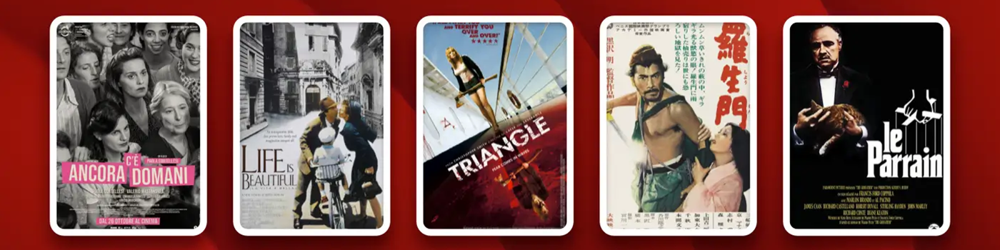

Netflix 上 8 部必看經典電影
在資訊氾濫的今天，影評文章鋪天蓋地，卻大多停留在表面。真正的經典，卻如同深海，每一次重溫，都能發現新的寶藏，引人放慢腳步，細細品味其中蘊含的哲思與人性。
那些歷經數十年依然感動人心的電影，早已超越了單純的娛樂，成爲人類共同的精神財富。這些作品不僅僅是故事的載體，更是思想的結晶，承載着創作者對生命、死亡、愛情、信仰的深刻思考。
因此，我選擇深入探討幾部我最愛的經典作品，進行深入分析，希望能與那些同樣深受其感動的讀者產生共鳴。所有這些作品現在都可以在Netflix上觀看，或者曾經在Netflix上觀看過。如果某部作品不再在Netflix上線，我會提供其他觀看方式。
《教父》：權力與家庭
推薦指數： ⭐⭐⭐⭐⭐
Netflix 可在以下國家/地區使用： 德國、印度、意大利、韓國等
爛番茄： 98% | IMDb評分： 9.2/10
如果說黑幫電影有一部難以逾越的巔峯，那非《教父》莫屬。影片以科里昂家族爲中心，以冷靜而沉重的基調，捕捉權力、家族與人性之間錯綜複雜的互動。影片跨越一代人，反映了美國社會的變遷和黑社會的演變。

影片最吸引我的有兩個方面。首先是結尾那段傳奇的蒙太奇——邁克爾的洗禮誓言與他下令的殘酷暗殺交織在一起。神聖與世俗的碰撞，造就了電影中最令人難忘的片段之一。
第二點是科波拉拒絕給予觀衆"上帝視角"。影片從未通過旁白或強行對話來灌輸角色的動機。相反，這種剋制將敘事提升到了一個新的藝術高度。
《教父》遠不止是一個暴力黑幫的故事，它深刻探討了權力、家庭和道德之間不可調和的衝突。在這個資本主義寓言中，每個人都是受害者，也是施暴者——這恰恰反映了人性最真實的複雜性。
導演： 弗朗西斯·福特·科波拉
主演： 馬龍·白蘭度、阿爾·帕西諾、詹姆斯·凱恩、羅伯特·杜瓦爾、黛安·基頓
年份： 1972
類型： 犯罪，劇情
《還有明天》：叛亂與解放
推薦指數： ⭐⭐⭐⭐⭐
Netflix 上線國家： 法國、瑞士
IMDb評分： 7.7/10
《教父》雖然被譽爲影史上不朽的經典，但其濃重的父權色彩近年來引發了越來越多的爭議。正因如此，我想在這裏推薦一部截然不同的作品 —— 保拉·科特萊西的導演處女作《還有明天》(C'è ancora domani)。

這部黑白電影以女性視角講述了 1946 年一位普通羅馬家庭主婦的覺醒。它在意大利成爲票房奇蹟，橫掃六項大衛·迪·多納泰羅獎，並以溫柔而有力的方式講述了一個關於尊嚴、勇氣和女性自主的永恆故事。
這部電影的非凡之處在於其對女權主義微妙而不說教的解讀。科特萊西精準地捕捉了女性心理的細微之處。主人公迪莉婭並非完美無瑕的女英雄，而是一個猶豫、恐懼、掙扎的女性——這讓她的人生旅程更加真實。
影片以意大利首次全民公投和女性首次獲得投票權的羅馬爲背景，既有政治色彩，也有個人色彩。當迪莉婭凝視着鏡中的自己時，她的眼中閃爍着難以言喻的光芒——那一刻，她對既定秩序提出了質疑。
儘管根植於戰後的意大利，但它所引發的問題——家庭暴力、教育不平等、經濟依賴——至今仍以不同的形式存在。科特萊西如同一面歷史的鏡子，映照着我們的當下。而當迪莉婭最終投下她的一票時，這不僅是1946年意大利女性的勝利，更是對所有持續爲平等而奮鬥的女性的致敬。
導演： 保拉·科特萊西
主演： 保拉·科爾特萊西 / 瓦倫蒂諾·洛倫佐 / 羅米娜·布拉科尼
年份： 2023
類型： 劇情， 歷史
《美麗人生》：愛情與戰爭
推薦指數： ⭐⭐⭐⭐⭐
Netflix 可在意大利、德國、法國和其他歐洲地區使用
爛番茄： 96% | IMDb評分： 8.6/10
羅伯託·貝尼尼的《美麗人生》至今仍是電影史上最具爭議的傑作之一。影片以納粹大屠殺爲背景，大膽地以喜劇的視角探討人類最黑暗的篇章。

影片講述了年輕的意大利猶太人圭多和學校老師朵拉的故事，從他們天馬行空的愛情故事，到二戰陰影下的家庭生活。影片的前半部分輕鬆詼諧，展現了圭多的魅力如何贏得朵拉的芳心。然而，隨着納粹掌權，故事卻戲劇性地演變成悲劇。
《美麗人生》的核心是對想象力救贖力量的讚頌。面對恐懼，圭多爲兒子創造了一個平行世界——一個用純真和希望守護他的幻象。這種想象並非逃避現實，而是對現實最高形式的反抗。
影片將喜劇與悲劇巧妙融合，傳遞出溫柔而深刻的訊息，展現了堅韌不拔的精神和愛的力量。當一切武器都被剝奪，當抵抗似乎徒勞無功時，愛便成爲最後的堡壘。正如片名所示，即使在最黑暗的時刻，生活依然可以因愛而"美麗"。
導演： 羅伯託·貝尼尼
主演： 羅伯託·貝尼尼 / 尼科萊塔·布拉斯基 / 喬治·坎塔里尼
年份： 1997
類型： 劇情， 愛情， 戰爭
《本傑明·巴頓奇事》：時間與生命
推薦指數： ⭐⭐⭐⭐
Netflix 上線國家： 德國、韓國、加拿大等
爛番茄： 80% | IMDb評分： 7.6/10
說到布拉德·皮特，除了他與詹妮弗·安妮斯頓和安吉麗娜·朱莉的愛情故事之外，一部真正定義他演藝生涯的電影是《本傑明·巴頓奇事》。這部傑作讓他從好萊塢萬人迷一躍成爲一位真正的演員，奠定了他在影壇巨星中的地位。

導演大衛·芬奇以其標誌性的精準，將這個近乎童話般的故事，轉化爲既沉重又充滿詩意的故事。新奧爾良的街道、戰爭的灰燼、歲月的陰影——在他的導演下，一切都呈現出令人難忘的歷史質感。
觸動觀衆的不僅僅是"逆齡"的新穎性，更在於其設定如何映射出人類普遍的掙扎。時間在本雅明的人生中倒流，卻迫使我們重新思考時間本身的意義。愛情，因年齡的差異而變得更加純粹。死亡，被提前，讓每一次相遇都顯得更加珍貴。
雖然概念超現實，但它傳達的情感卻深刻地體現了人性。每位觀衆都能在本傑明的旅程中看到自己——我們對時間的執着，對愛的渴望，對死亡的恐懼，以及對意義的追尋。影片包裹在奇幻之中，其核心卻深刻而真實。
觀影小貼士：
這部電影最適合靜靜地欣賞。它節奏緩慢，讓每一幀畫面都充滿呼吸，邀請你完全沉浸在奇異而美麗的世界中。這部電影值得反覆觀看;每一次觀看都能帶來新的層次和感悟。
導演： 大衛·芬奇
演員： 布拉德·皮特、凱特·布蘭切特
年份： 2008
類型： 戲劇， 幻想， 浪漫
《肖申克的救贖》：自由與希望
推薦指數： ⭐⭐⭐⭐⭐
Netflix 在以下國家/地區上線： 意大利、法國、荷蘭、波蘭等
爛番茄： 98% | IMDb評分： 9.3/10
《肖申克的救贖》被廣泛認爲是電影史上最偉大的電影之一，多年來一直位居IMDb排行榜榜首。它是一部關於希望、自由、控制系統和精神救贖的深刻寓言。

這部電影由弗蘭克·德拉邦特執導，以冷靜內斂的敘事風格，探討了監獄高牆內人性的掙扎。儘管上映時票房表現不佳，但它已成爲一部永恆的傑作，受到全球觀衆的推崇，被視爲精神力量的源泉。
這部電影的核心是對希望與自由的頌揚。在肖申克監獄，時間是最鋒利的利刃——它磨平個性，侵蝕對自由的渴望。許多人，像布魯克斯一樣，已經習慣了這個體制，以至於失去了超越它生活的勇氣。
"制度化"並非只存在於監獄;它代表着任何抹殺個性的強大秩序。或許我們都生活在無形的肖申克監獄裏，誤以爲那是人生的界限。安迪的故事提醒我們，要保留一些未被肖申克觸及的東西——一本書、一首音樂，或者一個不可動搖的信念。
導演： 弗蘭克·德拉邦特
主演： 蒂姆·羅賓斯、摩根·弗里曼
年份： 1994
類型： 劇情、犯罪
《超脫》：孤獨與教育
推薦指數： ⭐⭐⭐
Netflix 上可用： 不再可用(目前在 Amazon Prime Video 和 Apple TV 上可用)
爛番茄： 74% | IMDb評分： 7.7/10
《超脫》是對美國教育體系的尖銳批判，阿德里安·布羅迪飾演亨利，一位應對問題學校嚴酷現實的代課老師，其表演令人難忘。

影片以直白而堅定的攝影手法，捕捉了學生們的反抗與迷失，以及教師們在體制壓力下的疲憊與堅韌。它不僅僅是一部關於教育的電影，更是對更廣泛社會問題的深刻反思。
影片最令人產生共鳴的，是對人性的細膩刻畫。每個角色都隱藏着掙扎和赤裸裸的情感衝突。亨利雖然表面上冷漠，但他深切地關懷着邊緣學生，用自己默默的方式努力拯救他們迷失的靈魂。
《超脫》以其直白的現實主義和深刻的情感，迫使觀衆重新思考教育的意義以及我們共同承擔的社會責任。布羅迪的精彩表演，加上導演託尼·凱耶的執着視角，成就了這部既發人深省又充滿人性的電影。
導演： 託尼·凱耶
主演： 阿德里安·布洛迪、克里斯蒂娜·亨德里克斯、馬西婭·蓋伊·哈登、劉玉玲、詹姆斯·凱恩
年份： 2011
類型： 戲劇、教育、社會現實主義
《三角關係》：命運與輪迴
推薦指數： ⭐⭐⭐⭐⭐
Netflix 上可用： 不可用(目前在 Prime Video 和 Disney+ 上可用)
IMDb評分： 6.9/10
《三角》是一部精彩絕倫的時間循環驚悚小說，其核心在於近乎完美的邏輯悖論。就像畫一個圓——你清晰地看到起點，但圓一完成，就再也找不到起點了。

影片以一艘神祕的遠洋客輪爲背景，通過層層懸念營造出一個令人窒息的封閉世界。導演克里斯托弗·史密斯巧妙地構建敘事結構，每一次循環都揭示新的真相，帶來新的震撼。
梅麗莎·喬治扣人心絃的表演，將角色的絕望、堅韌和變幻的情緒展現得淋漓盡致，使每一次重複都顯得獨具特色。影片將西西弗斯的神話融入現代心理驚悚片，探討了關於命運、救贖和永恆輪迴的深刻問題。
導演： 克里斯托弗·史密斯
主演： 梅麗莎·喬治、利亞姆·海姆斯沃斯
年份： 2009
類型： 神祕、恐怖、驚悚
《羅生門》：真理與人性
推薦指數： ⭐⭐⭐⭐
Netflix 上線國家： 日本
爛番茄： 98% | IMDb評分： 8.1/10
黑澤明的《羅生門》是一部永恆的傑作，它通過四個相互矛盾的匪幫殺人故事，探討了真相的相對性和人性的複雜性。這部作品不僅展現了日本電影的藝術巔峯，還引入了"羅生門效應"這一影響深遠的敘事概念。

影片通過呈現同一事件的多個版本，揭示了個體如何基於自身視角和個人利益重構記憶。黑澤明對光影和攝影技巧的嫺熟運用，賦予每個敘述以可信度，同時也揭露了其中的矛盾之處。
《羅生門》以其突破性的敘事結構和震撼人心的攝影，挑戰觀衆去思考"真相"的真正含義。即使在今天，這部1950年的經典作品仍具有當代意義，提醒我們——尤其是在資訊過載的時代——批判性地思考現實的本質。
導演： 黑澤明
主演： 三船敏郎、京真智子、森雅之
年代： 1950 年
類型： 劇情、懸疑
結論
電影被稱爲第七藝術，因爲它不僅記錄了一個時代，更反映了人類的靈魂。超越語言和國界的經典作品不僅僅是故事，更是揭示人類最深切的渴望、孤獨和希望的鏡子。藝術的真正力量在於，即使在最黑暗的時代，它也能讓我們瞥見光明。
如今，發現這些人類精神的寶藏已不再需要費力尋覓。Netflix、HBO 和Disney+等平臺彙集了無數經典影片，而 環球巴士 則讓這些影片比以往任何時候都更容易獲取。用更少的錢，你就能擁有更廣闊的電影世界——讓藝術和故事在你的日常生活中紮根。
不要讓這些經典與你擦肩而過，與 環球巴士 一起開啓你的觀影之旅，讓傑作在流動的光影中繼續陪伴你。
除了經典電影之外，我還整理了幾份 Netflix 推薦列表，例如Netflix 上 15 部最佳驚悚片和Netflix 喜劇精選，以幫助你發現更多必看的精彩影片。
常問問題
Netflix 有沒有什麼老經典電影？
是的，Netflix 上有很多值得一看的經典老片，包括《教父》、《美麗人生》、《肖申克的救贖》和《本傑明·巴頓奇事》。Netflix 的上線時間因地區而異，但使用 VPN，你可以從全球不同的 Netflix 庫訪問這些經典影片。
每個人都應該看的經典電影是什麼？
每個人都應該看的經典電影是《肖申克的救贖》。這是一個關於希望與自由的永恆故事，跨越幾代人，引發共鳴。其他必看的電影包括《教父》和《美麗人生》，它們反映了人類堅韌不拔的毅力、愛以及敘事的持久力量。
當你無法決定時該看什麼電影？
當你不知該看什麼時，不妨看看那些永恆的經典，比如《肖申克的救贖》 ——它能給你希望;《教父》 ——它能給你戲劇性;《美麗人生》——它能給你溫暖。這些電影從不讓人失望，也提醒我們，爲什麼經典電影在猶豫不決時仍然是最安全的選擇。